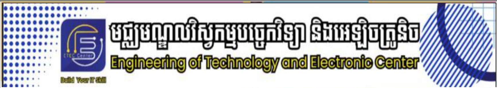
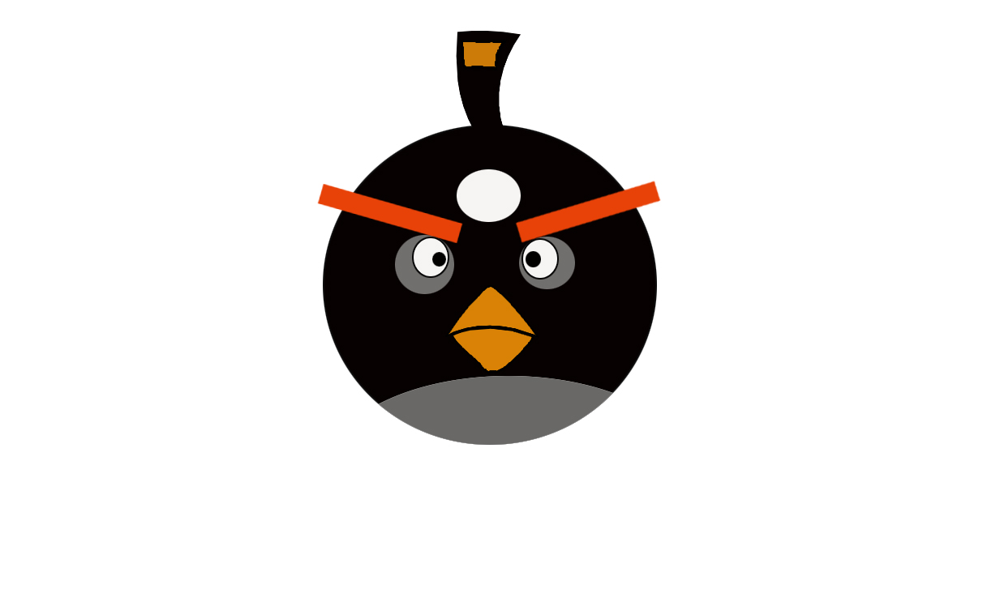

នេះគឺជារូបភាពដែលត្រូវបានបង្កើតឡើងដោយនិស្សិតនៃសាកាភូមិន្ទនិត្តិសាស្ត្រ
រូបភាពនៅក្នុងម៉ោងសិក្សានៃមុខវិទ្យាក្រាហ្វិចរនារូបភាពរបស់សាលា
ម៉ោងនេះត្រូវបានបង្ហាត់សិស្សអោយសិក្សាចាប់ពីថ្ងៃចន្ទដល់ថ្ងៃសុក្រ
សិស្សក្នុងថ្នាក់ទាំងអស់មានចំនួន 52 នាក់ ស្រីមាន 80 នាក់រួមទាំងគ្រូបង្រៀន
បន្ទាប់ពីបានសិក្សាមុខវិជ្ជានេះចប់សិស្សពិតជាមានសមត្ថភាពខ្លាំងណាស់គឺស្ពៃ
សិស្សខ្លះមករៀនគឺដេកសុត ខ្លះទៀតកំពុងងងុយប្រៀបបាននឹងត្រូវថ្នាំសណ្ដំ

ធ្វើល្អរមែងតែងតែបានល្អ
ធ្វើអាក្រក់តែងតែបានអាក្រក់
ភ្ជុំបិណ្យ២០២៦